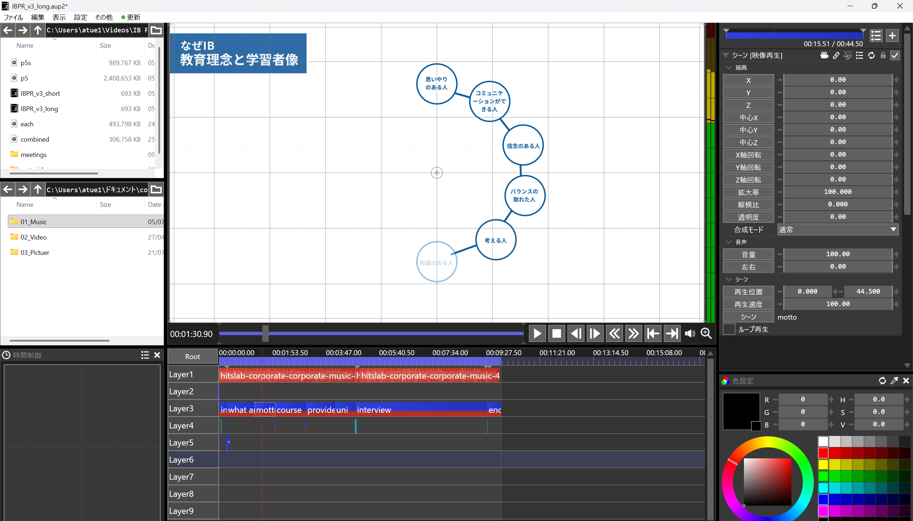
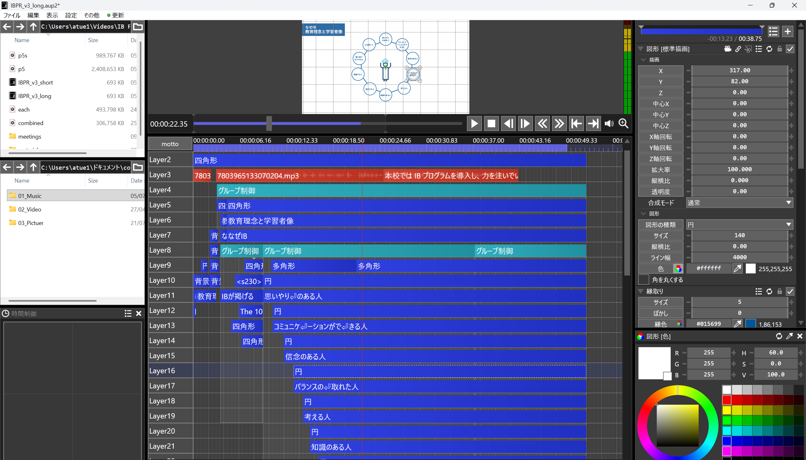

Promotional Video for IB Course of Kindai High School ver2
Overview
This promotional video is a new version of the previous one for IB course of Kindai University High School, created on 2026/07/08.
In this version, graphical shapes and kinetic typography were updated to improve visual engagement, and refined transitions offer a smoother breakdown of the IB core components.
The project is provided in both a long version for comprehensive overviews and a short version optimized for quick key point ckecking.
Design Decision
Visibility & Auditory
The base colour is blue likewise the previous one, but by adding a variety of accent colour such as yellow, visual information is intentionally enhanced as for design aspect.
Auditory information is also more powerful than visual one alone.
As this version is more descriptive and informative contents than the first version, the AI narrator was adopted so that the audience can follow what information is being illustrated and comprehend overviews easily.
Additionally, animated pictograms and icons also support this effort of clearly articulating rather than simply placing texts.
With the combination of visual and auditory-approached design, the video overall will achieve a significant impact on the audience.
Modularity
The structure of this video consists of several following sections: Intro, IB outline, mission statement, course curriculum, accomplishment, interview, outro.
Because of this, my conventional brute-force approach in editing, where objects are added without a clear blueprint but my inspiration followed first, often results in an increasingly disorganised timeline, which is difficult to maintain as the timeline grows.
To avoid this, I discussed an organised structure and a flow about what and how to display contents with my executives for several times before working on editing. After this careful consideration, I started editing the video with it.
Implementation
Tools
The video was edited with AviUtl2 for the whole and Davinci Resolve for colour correction.
The AI narrator audio was generated by Ondoku-san.
Modularity
As explained earlier, I followed the modular design in editing.

